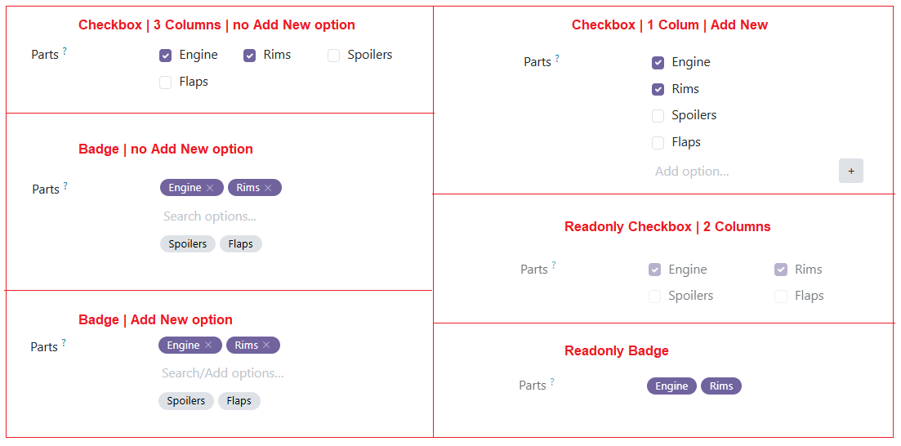

A configurable multi-select widget for Odoo 19 Char fields. Choose between a checkbox grid or a modern badge token UI — no database schema changes required.
Odoo's native char field accepts free text. This widget turns it into a structured multi-select control. Selected values are stored as a single separator-separated string, making it fully compatible with any existing Char field without migrations.
allow_new is True, the search input doubles as an add-new field — press Enter or click + to add a custom value.values — Predefined list of options.
['Engine', 'Rims', 'Spoilers', 'Flaps']
separator — Character used to join/split stored values. Default: ','.
columns — Number of columns in the checkbox grid. Default: 2.
design — 'checkbox' (default) or 'badge'.
allow_new — True / False. When True, the user can type and save custom values not in the predefined list. Default: False.

<!-- Checkbox design (default) -->
<field name="parts"
widget="multi_selection_char"
options="{
'values': ['Engine', 'Rims', 'Spoilers', 'Flaps'],
'columns': 2
}"/>
<!-- Badge design with allow_new -->
<field name="tags"
widget="multi_selection_char"
options="{
'values': ['Urgent', 'Review', 'Approved'],
'design': 'badge',
'allow_new': True
}"/>
If the database contains values not present in the configured values list
(e.g. from a migration or manual edit), they surface automatically at the bottom of the
list in warning color and are pre-selected. This prevents silent data loss when the
predefined list changes.